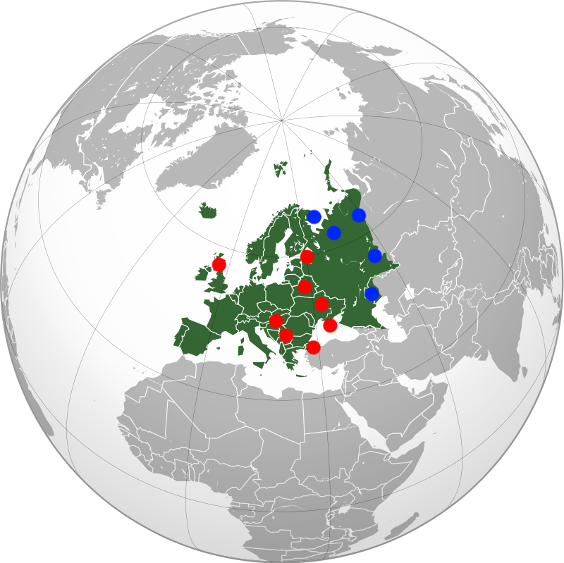

The Chaos Insurgency does have a widespread prescence in Europe, although its forces are distributed extremely unevenly. In Western Europe, the GOC and Foundation, and increasingly, the Serpent's Hand, have a strong grip over the anamalous world. Consequently, the only major Insurgency installation in Western Europe is a single military outpost in the Scottish highlands which serves as a forward operating base for attacks against Western European Foundation facilities. However, Eastern Europe has a much stronger Insurgency prescence thanks to its unstable political situation and large number of abandoned GRU-P assets being a great source of Alpha-class personnel and materiel respectively. Consequently, the Insurgency's military wing operates outposts in Kiev, Minsk, Istanbul, Belgrade, Budapest, St. Petersburg and Rostov, while major research operations occur within abandoned GRU-P installations in the Ural Mountains and on the Kola Peninsula. Because of the noncompliance of the Russian government, and the remoteness of these installations, an attack on any of these research facilities is currently unfeasible.
A map of major Insurgency facilities in Europe, with military outposts in red and R&D facilities in blue.